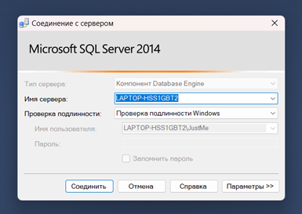
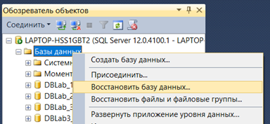
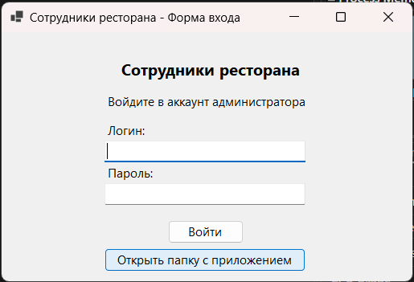

После установки приложения и SQL Server нужно создать сервер SQL Server и подключиться к нему (рис. 1).

Рисунок 1 - Пример авторизации в SQL Server
После подключения к серверу нужно восстановить базу данных (рис. 2), её можно найти в папке с приложением под названием "Бэкап базы данных".

Рисунок 2 - Восстановление базы данных в SQL Server
Чтобы открыть папку с приложением, нужно нажать на кнопку открытия папки с приложением на окне авторизации (рис. 3).

Рисунок 3 - Кнопка открытия папки приложения
Сервер готов, теперь можно настраивать строку подключения к базе данных (см. раздел "Настройка приложения"/"Настройка подключения к базе данных").